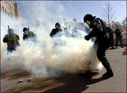
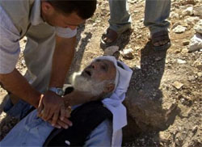
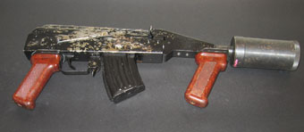
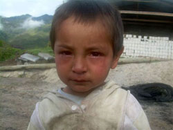

Nézzük, mire számíthatunk pártunktól és kormányunktól a
hétvégén!
A magyar rendõrség a közelmúltban
újfajta könnygázt rendszeresített, az ún. CR (dibenz-oxazepin) jelölésû anyagot. Ez az anyag
hatszor–tízszer hatékonyabb, mint a tavaly beszerzett CS (klórbenzilidén-malononitril), és ennek
megfelelõen hatvan- szor–százszor erõsebb, mint a tévéostromnál is alkalmazott CN (klór-acetofenon). Errõl egy rendõr hallgatónktól
szereztem tudomást. Ez a rendõr azt is elmondta, hogy hallomásból tudja, hogy a
BRFK Egészségügyi Szolgálatának osztályvezetõje, Dr. Patarcsics Éva nemrég
tiltakozott ezen anyag rendszeresítése ellen, mert állítólag nem teljesen
ismertek az élettani hatásai, nincs egészségügyi minõsítõ lapja, és nem került
hozzá rendszeresítésre ellenanyag, amellyel a gáz hatása alá került rendõröket
elsõsegélyben lehetne részesíteni. (Hogy a gázzal beterített állampolgároknak meg pláne
nincs ellenanyaguk, az nem érdekes, már tavaly sem volt az.)
Mi ez a CR gáz? Megnéztem a
Wikipedián, aztán felhívtam Dr.
Patarcsics Évát. Parancsoljatok, hallgassátok meg a beszélgetést.
MP3
letöltésDr. Patarcsics Éva tehát határozott igennel felelt arra,
hogy a CR gáz rendszerbe állt a rendõrségnél, és õ azt a hivatalos tájékoztatást
kapta, hogy ezt az anyagot vízzel semlegesíteni lehet, ki lehet mosni az ember
szemébõl. Noha ez nem igaz! Aztán észbe kap, és azt állítja, mégsem egészen ezt mondták
neki, hanem mást, de ezt most nem mondja el. Végül leteszi. De amit megtudtunk,
megtudtuk!
Legközelebb a BRFK egészségügyi szolgálatánál próbáltam
érdeklõdni, a vezetõt keresve. Korábban ezt az osztályt Dr. Balogh Sándor
ezredes vezette. A párbeszéd önmagáért beszél...
MP3 letöltésA következõ próbálkozásra sikerült elérnem az
egészségügyi osztály vezetõjét, de...
MP3 letöltésVégül a BRFK sajtóosztályánál próbálkoztam. Õk sem tudták
megmondani, ki az illetékes, de az iménti két beszélgetésrõl volt
véleményük.
MP3 letöltésA BRFK tehát továbbirányított az ORFK-ra, és annak kommunikációs osztályán
végül azt javasolták, írjak levelet a www.police.hu címen található központi
e-mail címre, és akkor majd egyszer, a távoli jövõben, 60 nap múlva
válaszolnak. Senki sem tudta megmondani, ki és milyen módon szerzi be azokat a
harceszközöket, amelyeket idõnként ellenünk vetnek be. De mivel is állunk
szemben?
1. Mi a CR?A CR valójában
nem gáz, hanem szilárd, halványsárga, kristályos anyag, amelynek
propilén-glikolos oldatát alkalmazzák könnyfakasztó hatású vegyi harcanyagként,
elsõsorban gázgránátokba töltve, permetként szétterítve. Az ötvenes-hatvanas években
fejlesztették ki brit tudósok, elsõsorban tömegoszlatási célokra. Nem csak erõs
irritáló, könnyfakasztó anyag, hanem idegrendszerre ható, ún. antipszichotikus ágens
is. Belélegezve pszichomotoros irritációt, azaz heves izgalmat, pánikrohamot
vált ki, különösen azoknál, akik életükben elõször vannak kitéve könnygáz
hatásának. Bõrfelülettel érintkezve kémiai égést, a szemhéjak görcsös záródása
révén idõleges vakságot, akár mozgásképtelenséget, illetve mellkasi szorítást,
fulladási rohamot, a nyelv és a száj égõ fájdalmát, hányást, nagyobb mennyiségben
kémiai égést, szaruhártya-gyulladást okoz.
Mindezt olvasva nehéz
elképzelni, milyen lehet, de fújd magad arcon egy mezei gázspray-vel, és képzeld
el azt tízszeres hatással. Na, ez olyan.

A dibenz-oxazepin nagyobb mennyiségben
halálos. Zárt térben percek alatt megöli az embert, aminek fulladás vagy ödéma
(hörgõgörcs, tüdõvizenyõ) lehet az oka. Az Egyesült Államok Egyesített
Vezérkara által 2005 januárjában kiadott, vegyi harcanyagok hatásairól szóló
oktatóanyag is említi a CR-t, és annak 111. oldalán megemlíti a könnyfakasztó
harcanyagok halálos hatását is:
"When released indoors, they cause serious illness or
death."
Itt emlékezzünk meg a tavaly októberben lakások ablakán belövöldözött
könnygáz-gránátokról, vagy a Nyugatinál elfogott srácról, akit
„szórakozásképpen” belöktek egy rendõrautóba, és utánadobtak egy
gázgránátot, majd rázárták az ajtót. De a halálos mennyiséget szabad térben való
alkalmazás esetén is be lehet lélegezni, mint arra volt is példa más országokban
– de errõl késõbb.
A nagyobb mennyiségû CR permetet belélegzõ áldozatok
cselekvésképtelenné válhatnak. Ezeknek azonnali orvosi segítség kell, különben
maradandó légúti károsodást szenvedhetnek, vagy akár megfulladhatnak. Az orvosi
segítség hasonló az asztmarohamban szenvedõkéhez: azonnali oxigén-inhaláció,
súlyos esetben szteroid-injekció. Igen ám, de ha egy tömegoszlatásnál több tucat
ember kerül hirtelen súlyos állapotba, vajon kéznél lesz-e mentõautó és
megfelelõ felszerelés? S vajon a pánikban menekülõ tömeg nem fogja-e agyontaposni
õket?
Molnárgörény szerint a pszichoaktív hatásnak más eredménye is lehet: a
CR gázzal lefújt, ítélõképességét részlegesen elvesztett személy azt fog
bevallani a rendõröknek, amit azok akarnak. Hiszen rokon azokkal az
antidepresszánsokkal, amelyek épp ilyen hatással bírnak.
Légúti
betegségben szenvedõkre (pl. asztmásokra), illetve gyerekekre fokozottan veszélyes a
CR, hiszen az õ hörgõik érzékenyebbek, könnyebben rándulnak görcsbe az anyag
hatására, mint a felnõtt vagy egészséges embereké. Ez akár szabad térben is
tüdõvizenyõt, asztmarohamot, fulladást okozhat. A CR külföldi országokban történt
használatánál ez sajnos bizonyítást is nyert, mint késõbb szó lesz
róla.
A világ legnagyobb, tömegoszlató vegyi anyagok gyártásával foglalkozó
cége, a
Zarc International Inc.
weboldalán a következõk olvashatóak a CR ismertetésénél:
„A CR viszonylag mérgezõ anyag, és az emberek számára
halálos mennyiség nagyjából azonos nagyságrendû, mint egyéb harci gázok
esetében.”
A CR nem oldódik vízben, és nem semlegesíthetõ vízzel,
ellentétben például a természetes anyagból készült OC-val (Oleum Capsaicum, avagy
pepper vagy
mace), amely
szintén rendszerben áll a magyar rendõrségnél. Ha a CR vízzel érintkezik, az
egyébként is heves, égetõ érzés még jobban fokozódik. Ezek után próbálja valaki
kimosni a szemébõl... Nem lehet lúgos anyaggal (szappan, hamu) sem
semlegesíteni, mint az OC-t, a CS-t vagy a CN-t. Ráadásul akár 60 napig is
megtapad bárhol, de különösen porózus felületeken, mint például az emberi bõr. A
harcanyaggal való érintkezés után még 48 órával is heves, égõ fájdalmat okozhat, ha
a szennyezett bõrfelületet víz éri. A szakirodalom CR-rel való érintkezés esetén
azonnali bõ, szappanos vizes mosakodást javasol, illetve a CR-rel szennyezett
ruházat azonnali levételét. De el lehet képzelni, mennyi lehetõség van erre
olyan körülmények között, mint amilyenek tavaly õsszel uralkodtak Budapest utcáin.
Meg úgy egyébként is az utcán, általában...
Fentieket nem a kisujjamból
szopom, hanem az Országos Kémiai Biztonsági Intézet adatbázisából. Az OKBI
Egészségügyi Toxikológiai Tájékoztató Szolgálatának és Információs Központjának
éjjel-nappal hívható zöld számán bárkinek felvilágosítást adnak a CR-rõl, vagy
bármilyen más veszélyes vegyi anyagról:
80
201199. Érdeklõdéshez mondjátok be az anyag CAS számát: 257-07-8
(CR).
Mindezek mellett a CR-nek feltételezett karcinogén, azaz rákkeltõ
hatása is van. Az Egyesült Államok rendõri erõi például épp ezért nem
alkalmazzák. A rákkeltõ anyagok nemzetközi listáján nem szerepel.
A CR-nek
nincs dokumentált ellenanyaga. Vagyis még az
alkalmazójára is veszélyes lehet.
Végezetül idézzük ismét a Zarc
International ismertetõjét, annak utolsó mondatát:
„A CR-t
perzisztens és hosszú távú hatásai miatt kevés felelõsségteljes szervezet
használja napjainkban.”
A magyar rendõrség, úgy látszik,
távolról sem felelõsségteljes. De vannak-e még ilyenek a világban? Nos, nem
sokan.
2. A CR
alkalmazása más országokbanA CR-t napjainkig egyedül a dél-afrikai
rendõrség vetette be, a nyolcvanas évek végén, a feketék lakta negyedekben,
ahol ezek az akciók számos halálos áldozatot követeltek. Igaz, hogy az
áldozatok boncolása soha nem történt meg, ezért nem egyértelmûen bizonyított, hogy a
CR okozta halálukat, de tény, hogy mielõtt kilõtték rájuk a gázgránátokat, még
éltek, utána pedig már nem. A vegyi fegyverek fejlesztésének a Nemzetközi
Vegyifegyver Egyezmény 1993-as aláírása és a Nelson Mandela-féle hatalomátvétel
vetett véget.
Az 1976-ban kezdõdött johannesburgi zavargások
rosszul dokumentált történetében nehéz megtalálni a halálos áldozatokkal járó
eseteket. Az egyik hasznos forrás Chandré Gould, a Rhodes University 2005
augusztusában írt doktori disszertációja, mely a
Dél-Afrika
vegyi- és biológiaifegyver-programja 1981–
1995 címet viseli.
Ebben részletesen ír a CR dél-afrikai gyártásának
és fejlesztésének programjáról is. Eszerint a dél-afrikai hadsereg és a
rendõrség a CR-t NGT-nek, azaz
New Generation Tear
Gas-nek (új generációs könnygáz) nevezte. Fõleg kézigránátok és lövedékek,
például aknavetõgránátok tölteteként alkalmazták. A rendõrség a nyolcvanas évek
végén valószínûleg több helyen, 1992-ben pedig biztosan bevetette az anyagot
Phola Park-ban, Johannesburg egyik külvárosában. Ezekrõl a külvárosi
csatározásokról, akárcsak a ma Párizs környékén zajló zavargásokról, kevés pontos
tudósítás maradt fenn. Mi több, a dél-afrikai kormány a CR alkalmazását, sõt,
egyáltalán a birtoklását is titokban próbálta tartani, nehogy a feketék
valamilyen ellenanyagot szerezzenek hozzá. Ez persze az emberi jogok súlyos
megsértése, de a dél-afrikai kormányt akkoriban nemigen érdekelte az
ilyesmi.
A CR (vagyis NGT) hatásáról természetesen több tanulmány is készült
akkoriban. Gould dolgozatának 126. oldalán olvashatjuk a következõ
sorokat.
„A CR gázt a dél-afrikai hadsereg a tömegoszlatás
leghatékonyabb eszközének tartotta. 1993-ban Knobel azt mondta a védelmi miniszternek,
hogy ha Dél-Afrika elismeri CR készleteinek létét a Vegyifegyver Egyezmény
januári aláírásakor, »a zavargások szervezõi esetleg tippeket kaphatnak
külföldi tanácsadóiktól a gáz semlegesítésére, és így a hadsereg elveszítené
leghatékonyabb fegyverét, amellyel belsõ zavargásokat elháríthat.« A hadsereg
azon törekvése, hogy a CR-t titokban tartsák, és ezáltal megakadályozzák, hogy
az anyag áldozatává vált emberek megtudhassák, mit vetettek be ellenük, az
emberi jogok egyértelmû megsértése. (...) Knobel [Daniel Knobel tábornok, a
hadsereg egészségügyi szolgálatának akkori vezetõje] a következõket mondta a
védelmi miniszternek 1993-ban:
»A hadsereg két új anyaggal
rendelkezik, amelyek 1993-ban fegyverként is megjelennek. Ezek az anyagok a
célszemélyek agyi funkcióira hatnak, és megváltoztatják érzelmeiket, nyugtató
hatást váltva ki. Ezek kétségkívül elõnyösebbek, mint az NGT (azaz CR), mert
ha az NGT-t helytelenül alkalmazzák nagy tömegek ellen, az pánikot okozhat, és
olyan behatárolt terepen, mint egy nagyváros utcái, kárt tehet az emberekben és az
épületekben, létesítményekben. Az új anyagok nem rendelkeznek ilyen hatással, ezért
egyszerûbbé teszik a tömeg kezelését...«”
Tessék: ez a CR
hatása a tömegre. Akik kipróbálták, nem javasolják.
Wouter Bassont, a
dél-afrikai vegyifegyverprogram vezetõjét többek között a CR gáz gyártása és
alkalmazása miatt is háborús bûnösként vonták felelõsségre. A dél-afrikai
legfelsõbb bíróság még tárgyalja az ügyet, mely volumenében a nürnbergi perhez
mérhetõ. (Korrektségében persze nem.) Érdekes, magyar vonatkozású szála a
történetnek, hogy
a Dél-Afrikának CR alapanyagokat szállító Jerry Brandt-ot és kollégáját,
Grant Wentzelt 1990-ben letartóztatták az USA-ban, amiért katonai projectekben
használatos mikrochip-gyártáshoz szükséges szerszámokat próbált csempészni
–
magyar
megrendelésre... (
United States of America vs Jerry Brandt, United
States District Court Eastern District of New York, Judgement including
sentence under the Sentencing Reform Act, Case No CR 90-0919, Conspiracy to
violate Export Administration Act, 2 June 1992.)
3. Egy amerikai
szakdolgozatA valószínûleg magyar származású Eugene J. Olajos és Harry Salem, a
US Army Edgewood Chemical and Biological Center kutatóinak 2001-ben
megjelent
Riot
Control Agents: Pharmacology, Toxicology, Biochemistry and
Chemistry címû dolgozatából részletesen tájékozódhatunk a CR és más
könnyfakasztó harcanyagok hatásairól. Ezt a Wikipedia is forrásként említi. A
dolgozat igen részletesen és pontosan leírja a CR mindenféle tulajdonságait és
kísérleti állatokra gyakorolt hatásait. Aki kívánja, olvassa végig részletesen,
én itt összefoglalom a lényegét.
Mérgezõ hatás: A CR nagyságrendekkel
alacsonyabb mérgezõ hatással bír, mint a CN vagy a CS. Az ember által tolerálható
mennyiség (0,7 mg köbméterenként és percenként) kétszázszorosa még az anyag hatásának
naponta kitett patkányokban, egerekben vagy nyulakban sem okozott mérgezési
tüneteket. Ám a 13. oldalon kezdõdõ részbõl megtudhatjuk, hogy a CR az állatok egy
részében légzési rendellenességeket okozott. Elõfordultak izomgörcsök, rángatózás,
általános idegrendszeri tünetek és hörgõgörcs okozta halál. Még szerencse, hogy
ez nem mérgezés...
Az ember számára halálos mennyiséget csak becsülni
tudjuk, hiszen mióta szegény Mengele a tengerbe fulladt, már csak gyanútlanul e
bolygóra született állat-társainkat boldogíthatjuk olyan ostoba kísérletekkel, mint
például:
na, vajon mi történik, ha egy nyúllal
hetente ötször vegyi harcanyagot itatunk? A 27. oldalon olvasható, hogy
a becsült emberi LD50 érték: 100 000 mg percenként és légköbméterenként. Nem
valami sok, egy könnygáz-gránátban épp ennyi van. A patkány például ennek a
négyszeresét is megbírja, de a tengerimalac is ránk ver 169 000 milligrammal.
Genotoxicitás és karcinogenecitás:
Magyarul öröklõdõ defektusokat okozó
hatás és rákkeltõ hatások. A dolgozat 18. oldalán kezdõdõ szakasz szerint nagyon kevés
információ áll rendelkezésre mindkettõrõl. Egyetlen kísérlet történt emlõsállatok
örökítõanyagának CR-rel való kezelésére, ez pedig negatív eredményt hozott, de ez
kevés tudományos bizonyíték ahhoz, hogy kijelenthessük, a CR nem mutagén, a
kísérlet megismétlésére lenne szükség. Ugyanakkor a szerzõk egyértelmûen
kijelentik, hogy a CR karcinogén hatása ismeretlen, mivel sohasem vizsgálták,
okoz-e daganatos sejtburjánzást vagy más hosszú távú hatást. Igaz, Marrs egy 18
hónapos kísérletsorozat során
a hörgõkben kialakult rákos
daganatokat mutatott ki a kis illetve nagy mennyiségû CR-nek kitett egerekben
egyaránt. Ezt azért emelem ki félkövérrel, hogy az is észrevegye, akinek
észre kell. Igaz, ez a fajta tüdõdaganat gyakori a fehér egereknél mindenféle
behatás nélkül is, és nagyban eltér az emberi tüdõben kialakuló daganatoktól. Ez
azonban már elég volt az Egyesült Államok rendõri erõinek, hogy az anyagot
kockázatosnak minõsítse és betiltsa használatát.
Összefoglalva, a CR gáz
veszélyességét nem a mérgezõ hatása okozza, hanem a hörgõkre gyakorolt hatása és
valószínûsíthetõ rákkeltõ hatása.
4. Nemzetközi
szerzõdések
Már tavaly õsszel is hallani lehetett hébe-hóba, hogy a rendõrség
által bevetett tömegoszlató gázok nemzetközi egyezmények tilalma alá esnek,
bevetésük háborús bûntett. Nos, ez valóban így van: ezen anyagok beszerzését,
birtoklását és felhasználását az 1972-es
A
bakteriológiai (biológiai) és mérgezõ fegyverek fejlesztését, elõállítását és
felhalmozását tiltó és megsemmisítésüket elõíró egyezmény kategorikusan
tiltja.
Magyarország 1972 április 10-én
csatlakozott ehhez az egyezményhez, és 1972 december 27-én ratifikálta. Természetesen
mindmáig érvényes. A világon körülbelül egy tucat ország nem csatlakozott ehhez az
egyezményhez, de többségük azért, mert még a vezetõik sem tudnak
írni-olvasni.
Ezen Egyezmény a következõket mondja ki
– angolból általam fordítva, mert a magyar verzió nem áll
rendelkezésemre.
„I. rész
Minden, a jelen Egyezményhez csatlakozó Állam soha, semmilyen
körülmények között nem fejleszt ki, állít elõ, vagy más módon nem szerez meg és nem
birtokol:
(1) Mikrobiális vagy más biológiai ágenseket vagy mérgeket,
eredetüktõl vagy elõállításuk módjától függetlenül olyan formában és
mennyiségben, amely nem magyarázható orvosi, védelmi vagy más békés céllal.
(2) Fegyverek, felszerelés vagy más célba juttató eszközök, amelyek ilyen
ágensek vagy toxinok hordozására alkalmasak ellenséges céllal vagy fegyveres
konfliktus során.”
Fentiek bizony vonatkoznak a nem halálos
harcanyagokra, így a könnyfakasztó anyagokra is. Az Egyesült Államokban
óriási botrány tört ki, amikor 2003-ban a hadsereg egyik
fejlesztõmûhelye egy kézifegyverekhez használható könnygázgránát-kivetõ
eszközt szabadalmaztatott. A szabadalmat ugyan nem vonták vissza, de az eszköz
gyártása elmaradt. (A szabadalom száma: US Patent #6,523,478.) Teljesen mindegy
volt, hogy mit akarnak kilõni ezzel az eszközzel: létezése sértette volna a fenti
szerzõdésrészlet (2) pontját. Alkalmas ugyanis más vegyi anyagok célba
juttatására is.
Felmerül a kérdés, hogy akkor miért alkalmaznak ilyen eszközt
a rendõri erõk szinte minden országban, így Magyarországon is? Nos, azért,
mert az aláíró országok szemet hunynak efölött. Még senki sem fordult az ENSZ-hez,
amiért a rendõrség könnygázgránátokat használ. De Magyarországon tudtommal a
Honvédségnél is rendszerben áll hasonló eszköz, a tömegoszlatásra kiképzett
alegységeknél.

 A rendõrségnél rendszeresített RWGL-3 könnygázvetõ. Jól
megfigyelhetõ, hogy a magyar fejlesztésû AMD-65/5 gépkarabélyból lett átalakítva. Ez az
eszköz sérti az 1972-es nemzetközi egyezményt.
A rendõrségnél rendszeresített RWGL-3 könnygázvetõ. Jól
megfigyelhetõ, hogy a magyar fejlesztésû AMD-65/5 gépkarabélyból lett átalakítva. Ez az
eszköz sérti az 1972-es nemzetközi egyezményt.Maguk a könnyfakasztó
harcanyagok pedig elvileg az (1) bekezdésbe ütköznek, hiszen birtoklásuk nem
magyarázható orvosi, védelmi vagy más békés céllal. No de várjunk csak: az angol
eredetiben „védelem” szó gyanánt nem az egyértelmûen katonai önvédelemre
(honvédelemre) vonatkozó
defensive, hanem a
protective szó szerepelt. De mit jelent ez
esetben az, hogy
protective? Ki véd mit és kitõl? Na,
az ilyen szavak miatt tréfás szakma a jogászoké. Nem ártana egy állásfoglalást
kérni az egyezményt gondozó kormányoktól, azaz Nagy-Britannia, Oroszország és az
Egyesült Államok kormányaitól e szó pontos jelentését illetõen. A dokumentum
szövege angolul, oroszul, kínaiul, spanyolul és franciául egyaránt hozzáférhetõ és
hiteles, azokban vajon hogyan szerepel ez a mondat?
A faramuci helyzet
tehát jelenleg az, hogy fegyveres konfliktusban háborús bûntett akár egyetlen
könnygázgránát kilövése, de a fegyvertelen ünneplõket nyugodtan el lehet
gázosítani, az valószínûleg belefér a
protective
kategóriába.
„IV. rész
Minden, a jelen Egyezményt aláíró Állam köteles mindent megtenni,
hogy területén, illetve az ellenõrzése alatt tartott területeken megakadályozza az
I. részben körülírt ágensek, toxinok, fegyverek, felszerelés és egyéb célba
juttató módozatok kifejlesztését, elõállítását, felhalmozását, megszerzését és
birtoklását.”
Puff neki, nálunk ez is jól meg van akadályozva. Szíves
örömest leadom a gázpisztolyomat, ha az állam is megteszi ugyanezt.
„VIII. rész
Ezen Egyezmény semmilyen része nem értelmezhetõ úgy, hogy az a Genfben 1925
június 17-én létrejött Fojtó, Mérgezõ és Egyéb Gázok és Biológiai Fegyverek
Háborús Felhasználását Tiltó Jegyzõkönyv elõírásait csorbítsa vagy
hatálytalanítsa.”
No, igen, merthogy van egy ilyen egyezmény is. Tetszik
figyelni? „
És Egyéb Gázok.”
Benne van ebben a könnygáz is? Ja, hogy az nem is gáz.
Nézzük csak egy részletet abból, hogy, mit ír ez az
1925-ös
jegyzõkönyv! Rövid, bár elég nyakatekert szövegecske.
„Az alulírott Méltóságok, képviselt kormányaik
nevében:
Mivel a fojtó, mérgezõ vagy más gázok, és azokkal egyezõ
hatású folyadékok, anyagok vagy eszközök háborúban való felhasználását okkal ítéli
el a nagyközönség és a civilizált világ, és
Mivel az ilyenek
használatának tilalmát Egyezmények rögzítik, melyekhez a világ Hatalmainak
többsége csatlakozott, és
Végül e tiltás legyen általánosan elfogadott, mint
a Nemzetközi Jog része, a nemzetek közfelfogásának és gyakorlatának része.
(...)
A Magas Szerzõdõ Felek mindent megtesznek, hogy más Államokat
ezen Jegyzõkönyvhöz való csatlakozásra késztessenek. A csatlakozási szándékot a
Francia Köztársaság Kormányának kell jelezni, amely pedig ennek hírét továbbítja a
többi aláírónak. A csatlakozás a Francia Köztársaságnak küldött kérelem napjától
érvényes.”
Na bumm: ez is csak háborús felhasználásról rendelkezik. Magyarország
egyébként 1952. október 11-én ezt a jegyzõkönyvet is aláírta. Tehát ez sem
alkalmazható jelen esetben. Jó, mi?
A történet vége: igen, a magyar
rendõrségnek jogában áll súlyosan egészségkárosító anyagokat rendszerbe állítani és az
állampolgárok ellen felhasználni. Igen, ellened is. Minek mész az utcára, ugye.
Vagy minek nyitod ki az ablakot, amikor odakinn könnygázaznak.
Vagy...
Vagy minek élsz egyáltalán. De a rendõrség errõl is gondoskodik. Csak
lélegezz mélyeket.